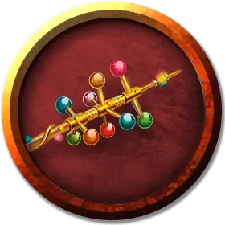

Оживлённая волшебная палочка
Animated Wand
Крошечный Конструкт, без мировоззрения

Класс Доспеха 18 (природный доспех)
Хиты 20 (10к4 - 5)
Скорость 30 футов
| мод | спас | ||
|---|---|---|---|
| СИЛ | 4 | −3 | −3 |
| ЛОВ | 18 | +4 | +4 |
| ТЕЛ | 10 | +0 | +0 |
| мод | спас | ||
|---|---|---|---|
| ИНТ | 3 | −4 | −4 |
| МДР | 3 | −4 | −4 |
| ХАР | 1 | −5 | −5 |
Чувства слепое зрение 30 футов (слеп за его пределами), пассивное Восприятие 6
Опасность —
Бонус мастерства +2
Особенности
Оживлённый. Если у предмета нет ног или других придатков, которые можно использовать для перемещения, то он получает скорость полёта 30 футов и может парить. Если предмет прикреплён к поверхности или большему предмету, например, это цепь, прикреплённая к стене, его скорость равна 0.
Когда хиты оживлённого предмета опускаются до 0, он возвращает себе свой обычный облик, а излишний урон переносится на оригинальный облик.
Мастер может постановить, что этот предмет причиняет рубящий или колющий урон.
Действия
Волшебная палочка чудес. Действием, оживленная волшебная палочка может израсходовать 1 из своих зарядов на цель в виде случайным образом выбранного существа, вызывая случайно определяемый эффект. При этом выпавшие эффекты которые должны использовать в качестве цели носителя волшебной палочки, перенацеливаются вместо этого на саму волшебную палочку. При уменьшении её очков здоровья до 0, волшебная палочка рассыплется в пыль и уничтожится.
Удар. . Рукопашная атака оружием: +8 к попаданию, досягаемость 5 футов, одна цель. Попадание: 6 (1к4 + 4) дробящего урона.
Описание
Наложение на волшебную палочку заклинания рассеивание зла и добра [dispel evil and good], избавляет ее от злой души Рантантара, после чего она со стуком падает на пол и становится неодушевленной волшебной палочкой чудес [wand of wonder].
Заклинание преграда магии [antimagic field] подавляет магию волшебной палочки, но не вытесняет находящуюся внутри нее душу.
Если ожившую волшебную палочку схватить в то время когда в ней находится злая душа Рантантара, схватившему придётся посостязаться с душой на крепость силы воли. Схватившее волшебную палочку существо, должно немедленно совершить спасбросок Харизмы Сл 20. В случае провала существо вынуждено выпустить волшебную палочку из своих рук. При успехе волшебная палочка становится неодушевленной до тех пор, пока существо её не отпустит. Если заклинатель продержит волшебную палочку достаточно долго для того, чтобы настроиться на нее, это действие навсегда изгоняет из волшебной палочки злую душу Рантантара.